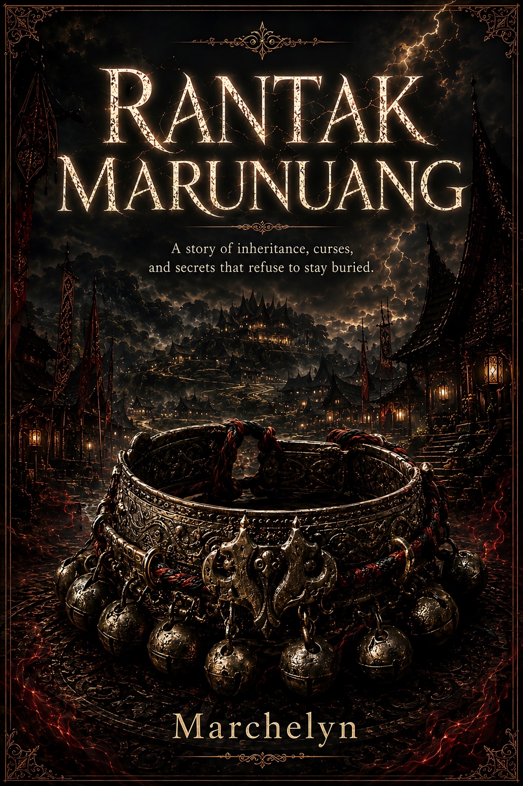
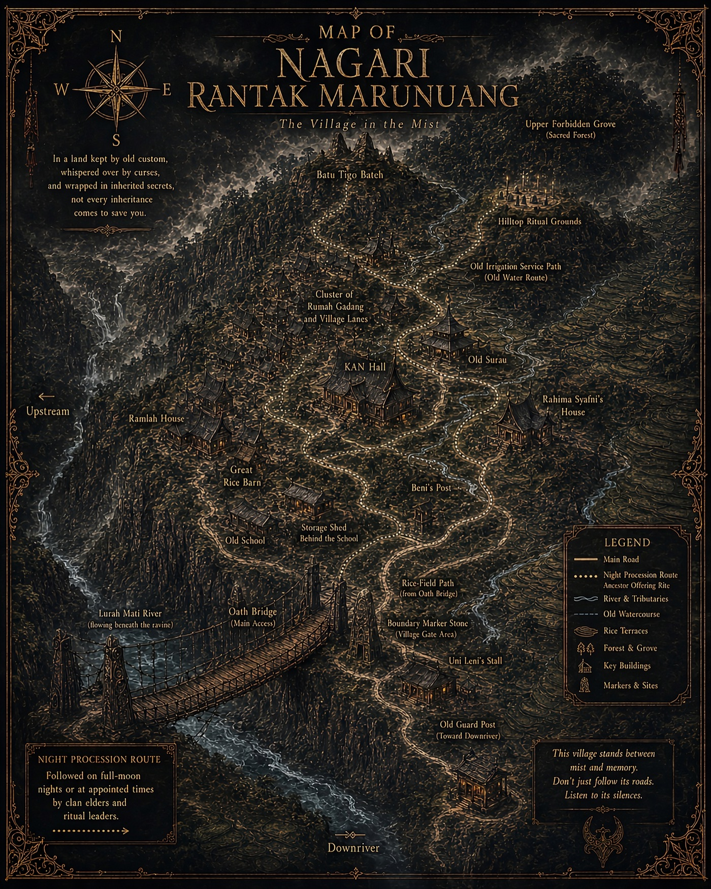

Mist, drums, oil lamps
Sound and light are not decoration. They shape how the village remembers one night.
Global Reader Companion
In a highland nagari guarded by custom, whispered over by curses, and bound to generations of buried secrets, a cultural journalist returns home to prove that the most dangerous thing in the village is not the dead. It is the living person who knows how to make everyone stop asking questions.

World Guide
Rantak Marunuang is built as a rational folklore mystery. The atmosphere may feel cursed, but every strange detail asks to be tested through space, timing, records, bodies, and social pressure.
Sound and light are not decoration. They shape how the village remembers one night.
Bridges, irrigation paths, blind spots, and older maps become Nadira’s tools.
Nearly every character is tied to land through inheritance, debt, status, or future hope.
The danger is a person who uses custom to make murder look like fate.
Interactive Map
This map helps global readers understand the story world without revealing the final answer. Choose a place to read its social role, mystery function, and safe clue.

Procession Route
The ritual is not a gimmick. It is spatial order, sound order, and memory order. Click through the route to see how a procession can become a fair-play puzzle.
Route Reading
Choose a procession point to see how space, sound, and memory become part of the puzzle.
Clue Board
Careful readers are given signs from the beginning. This board shows clue layers without naming the culprit, explaining the final how, or spoiling the grand deduction.
A color in the wrong place is not just ritual disorder. It changes how people read a death.
If light arrives before its time, shadows arrive before truth is ready to be seen.
Rice-field soil, irrigation paths, and bridge ground do not leave the same trace.
When witnesses use sound as their clock, a small change can feel like shared certainty.
Old records are not read only by words. Paper, storage marks, and ink have ages too.
In Rantak, a name can decide land, dignity, and who is allowed to speak.
Character Lens
Filter the characters to understand their pressure inside the village. These labels do not reveal the answer; they help global readers follow the social machinery.
Glossary & Reader Context
This companion explains key Indonesian and Minangkabau-context terms used in the novel. Rantak Marunuang is a fictional composite, not a literal representation of one living community.
21-Chapter Trail
The novel moves as a slow-burn route: return, ritual, victims, archives, storm, false solution, and final deduction. These notes stay spoiler-safe.
Mini Interactive
Choose Nadira’s tools. The site does not give the final answer, but it teaches the reading mode: not mocking fear, but testing sequence.
Spoiler-Safe Promise
It opens the reading tools: places, social pressure, glossary terms, character functions, and clue types. The answer stays inside the full novel.
Read the Novel
The Indonesian edition is available now through Marchelyn’s official store. The English Google Play Books and Amazon Kindle editions are being prepared and will be added here when they go live.
Marchelyn Worlds